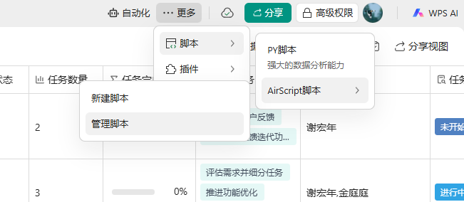
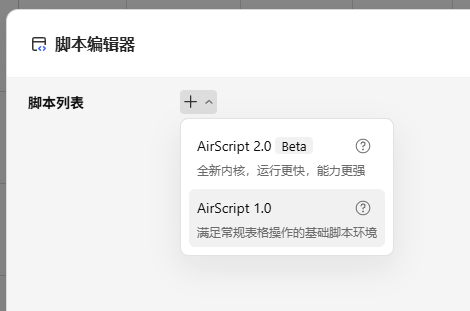
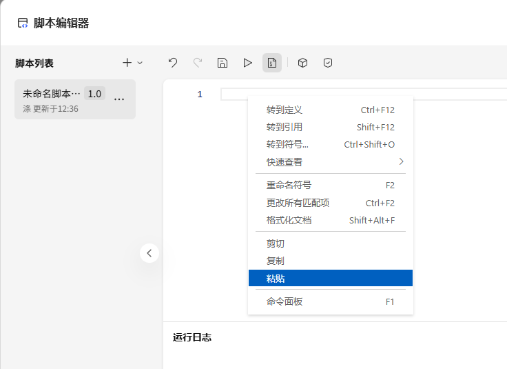
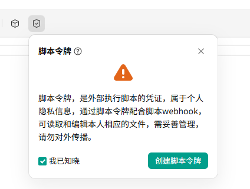
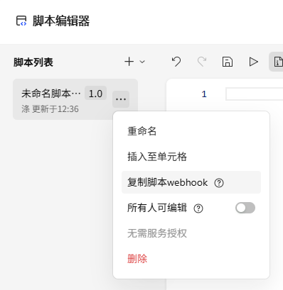

前往金山文档，打开你的多维表格，点击右上角「更多」→「脚本」→「AirScript 脚本」→「管理脚本」。
前往金山文档
进入脚本编辑器后，点击「+」旁边的小三角，选择「新建 AirScript 1.0 脚本」。

删除编辑器里的模板代码，点击下方按钮复制完整脚本，粘贴到脚本编辑器中并保存。

在脚本编辑器点击「脚本令牌」，申请一个 API Token，然后把令牌粘贴到下面。

点击左侧的「⋮」（三个点），复制脚本的 Webhook 链接，粘贴到下面。

配置已完成，可在扩展设置中设置其他项目（要拉取的字段、最新数据位置、自动复制字段）；点击「保存」后关闭侧边栏即可。